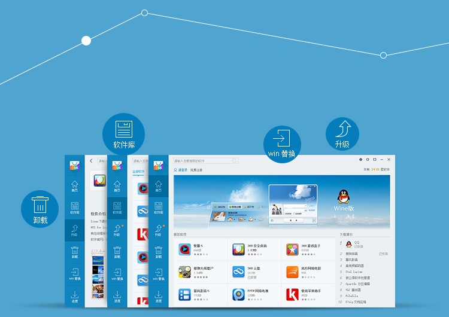

<div class="main wide">

<div class="text" style="position:absolute; top:55px; left:180px">

<div><h1>Software Center</h1></div>

<div><h2>
<p>Ubuntu Kylin Software Center is designed with GUI much easy for Chinese. It supports both Ubuntu and Ubuntu Kylin archives. You can enjoy popular Chinese applications co-developed by Ubuntu Kylin team!</p>
</h2></div>

</div>



</div>
